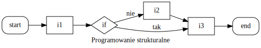

Języki skryptowe - Pyton¶
Wykład 3¶
- pakowanie / odpakowywanie sekwencji
- kontrola przepływu:
- instrukcje warunkowe if
- pętle for i while
- formatowanie tekstu
Powtórka¶
- typy liczbowe ("niemutowalne"): int, float, complex
- typy sekwencyjne ("mutowalne"): list
- typy sekwencyjne ("niemutowalne"): tuple, range, str
- operacje logiczne
"Odpakowywanie" (unzip)¶
lista = [1, 2] a, b = lista # a = lista[0], b = lista[1] print(a, b)
1 2
- przykład: zamiana zmiennych
a, b = b, a # a, b = tuple(b, a) print(a, b)
2 1
- dla porównania przykład zamiany zmiennych w C++
a = a + b - (b = a);
splat, czyli tzw. asterisk¶
x = [1, 2, 3] # print(arg1, arg2, arg3, ..., +opcje) print(x) # drukuje listę (1 argument) print(*x) # drukuje "rozpakowaną" listę (3 argumenty) print(x[0], x[1], x[2]) # równoważny zapis
[1, 2, 3] 1 2 3 1 2 3
x = "Python" print(x) print(*x) # zip/unzip działa na wszystkich sekwencjach
unzip i splat¶
lista = [1, 2, 3, 4, 5] # a, b = lista # ValueError: too many values to unpack (expected 2) a, *b = lista # a = lista[0], b = reszta print(a, b)
1 [2, 3, 4, 5]
lista = [1, 2, 3, 4, 5] a, *b, c = lista # a, b[0], b[1], b[2], c print(a, b, c)
1 [2, 3, 4] 5
"Pakowanie" (zip)¶
x = [1, 2, 3] y = ['a', 'b', 'c'] zipped = zip(x, y) # pary (x[i], y[i]) print(*zipped)
(1, 'a') (2, 'b') (3, 'c')
x = [1, 2, 3] y = ['a', 'b', 'c', 'd'] # długość nie ma znaczenia zipped = zip(x, y) # pary (x[i], y[i]) print(*zipped)
(1, 'a') (2, 'b') (3, 'c')
zip / unzip - test¶
x = [1, 2, 3] y = [4, 5, 6] x_copy, y_copy = zip(*zip(x, y)) x == list(x_copy) and y == list(y_copy)
True
print(list(zip(x,y))) print(*zip(x,y)) print(list(zip(*zip(x, y))))
[(1, 4), (2, 5), (3, 6)] (1, 4) (2, 5) (3, 6) [(1, 2, 3), (4, 5, 6)]
Paradygmaty programowania¶
- w Pythonie możliwe jest:
- programowanie strukturalne (np. Fortran, C)
- programowanie obiektowe (np. C++, Java)
- programowanie funkcyjne (np. Lisp, Haskell)
Programowanie strukturalne¶
- trzy struktury sterujące:
- sekwencja - wykonanie instrukcji w zadanej kolejności
- wybór - wykonanie instrukcji w zależności od stanu
- iteracja - wykonywanie instrukcji dopóki (nie)spełniony jest warunek
ps_dia = """ digraph { label="Programowanie strukturalne" rankdir=LR; start[shape="box", style=rounded]; end[shape="box", style=rounded]; if[shape="diamond", style=""]; i1[shape="box", style=""]; i2[shape="box", style=""]; i3[shape="box", style=""]; start -> i1; i1 -> if; if -> i2[label="nie"]; if -> i3[label="tak"]; i3 -> end; i2 -> i3; } """ from graphviz import Source
Source(ps_dia)

Instrukcja blokowa¶
- wydzielona część kodu źródłowego (traktowana jak pojedyncza instrukcja)
- w C++ wykorzystuje się klamry
int x = 0; { int y = 10; // zmienna lokalna x = y + 2; } cout << x; // OK cout << y; // ERROR: nieznana zmienna
Składnia Pythona¶
- instrukcje blokowe wprowadza się za pomocą wcięć
// przykład C++ double bezpieczne_dzielenie (int a, int b) { if (b != 0) return a / b; else return 0; }
# przykład Python def bezpieczne_dzielenie (a, b): if b != 0: return a / b else: return 0
Wcięcia¶
- spacje (zalecane) lub tabulacje
- w Pythonie 3 nie wolno mieszać (w Pythonie 2 się nie zaleca)
- najczęściej wcięce = 4 spacje (czytelność)
- wiele edytorów umożliwia zamianę tab na spacje
Instrukcja warunkowa if¶
- wykonaj instrukcje, jeśli spełniony jest warunek
if warunek: # zwróć uwagę na : instrukcja1 instrukcja2 ...
if 2 > 1: print("2 jest większe od 1")
2 jest większe od 1
Instrukcja warunkowa if else¶
- wykonaj instrukcje, jeśli spełniony jest warunek, lub wykonaj inne instrukcje
if warunek: instrukcja1 instrukcja2 ... else: instrukcja3 instrukcja4 ...
if 2 > 3: print("2 jest większe od 3") else: print("2 nie jest większe od 3")
2 nie jest większe od 3
Instrukcja warunkowa if elif else¶
- wykonaj jeśli, lub wykonaj jeśli, ..., lub wykonaj
if warunek1: instrukcja1 instrukcja2 ... elif warunek2: instrukcja3 instrukcja4 ... . . . else: instrukcja5 instrukcja6
Instrukcja warunkowa if elif else¶
if 2 > 3: print("2 jest większe od 3") elif 2 == 3: print("2 jest równe 3") else: print("2 jest mniejsze od 3")
2 jest mniejsze od 3
if - przykład¶
print("Podaj liczbę:", end=' ') raw_x = input() # pobierz stringa z wejścia standardowego x = eval(raw_x) # zinterpretuj jako wyrażenie Pythona # x % 2 zwraca resztę z dzielenia # każda wartość != 0 jest traktowana jako prawda if x % 2: print("Podana liczba jest nieparzysta.") else: print("Podana liczba jest parzysta.")
Podaj liczbę: 2 Podana liczba jest parzysta.
Dygresja: input vs raw_input¶
- w Pythonie 2
- raw_input pobiera "surowego" stringa
- input dodatkowo go parsuje
- w Pythonie 3
- input pobiera "surowego" stringa
- eval(input) odtworzy zachowanie input z Pythona 2
Dygresja: input i eval¶
help(input)
Help on method raw_input in module ipykernel.kernelbase:
raw_input(prompt='') method of ipykernel.ipkernel.IPythonKernel instance
Forward raw_input to frontends
Raises
------
StdinNotImplentedError if active frontend doesn't support stdin.
type(input()) # pobiera wejście jako string
2 str
Dygresja: input i eval¶
help(eval)
Help on built-in function eval in module builtins:
eval(source, globals=None, locals=None, /)
Evaluate the given source in the context of globals and locals.
The source may be a string representing a Python expression
or a code object as returned by compile().
The globals must be a dictionary and locals can be any mapping,
defaulting to the current globals and locals.
If only globals is given, locals defaults to it.
type(eval(input())) # parsuje wejście jako komendę
2 int
Iteratory¶
- iterator wskazuje element sekwencji oraz umożliwia dostęp do następnego
help(iter)
Help on built-in function iter in module builtins:
iter(...)
iter(iterable) -> iterator
iter(callable, sentinel) -> iterator
Get an iterator from an object. In the first form, the argument must
supply its own iterator, or be a sequence.
In the second form, the callable is called until it returns the sentinel.
iter(iterable)¶
lista = ['a', 'b', 'c', 'd'] # zwykła lista it = iter(lista) # iterator listy (wskazuje na początek) print(next(it)) # zwraca 1 element i przesuwa "wskaźnik" print(next(it)) # zwraca 2 element i przesuwa "wskaźnik" print(next(it)) # zwraca 3 element i przesuwa "wskaźnik" print(next(it)) # zwraca 4 element i przesuwa "wskaźnik"
a b c d
iter(callable, sentinel)¶
i = 0 # funkcje omówimy w przyszłości def funkcja(): """Z każdym wywołaniem zwraca kolejną liczbę całkowitą.""" global i # użyj globalnej zmiennej i i += 1 # zwiększ return i # i zwróć # kolejne wartości zwracane przez funkcję # iterowane aż zwróci 4 it = iter(funkcja, 4) print(next(it)) print(next(it)) print(next(it)) # print(next(it)) # StopIteration
1 2 3
Pętla for¶
- pętla po sekwencji
- np. w Pascalu pętla po (ayrtmetycznym) ciągu liczb
- np. w C++ obie możliwości
// przykład w C++ for (unsigned int i = 0; i < N; i++) { // wykonaj coś na i-tym elemencie } for (auto it = v.begin(); it != v.end(); ++it) { // wykonaj coś na iteratorze it }
for po liście¶
lista = ['a', 'b', 'c', 'd'] for element in lista: # pętla po liście, w każdym kroku print(element) # element zmienia swoją wartość
a b c d
for "krok po kroku"¶
lista = ['a', 'b', 'c', 'd'] it = iter(lista) element = next(it) print(element) element = next(it) print(element) element = next(it) print(element) element = next(it) print(element)
a b c d
for i next¶
lista = ['a', 'b', 'c', 'd'] it = iter(lista) # pętla po iteratorze it # wewnątrz "ręcznie" wywołujemy next() for i in it: print("i = " + str(i)) print("next(it) = " + str(next(it)))
i = a next(it) = b i = c next(it) = d
for po wycinkach¶
lista = ['a', 'b', 'c', 'd'] for element in lista[-2:]: print(element, end=' ')
c d
for i in range(10)[::2]: print(i, end=' ')
0 2 4 6 8
for po krotce¶
krotka = ('a', 'b', 'c', 'd') for element in krotka: # pętla po krotce print(element) # działa jak po liście
a b c d
for po stringu¶
slowo = "Python" for litera in slowo: # pętla po stringu print(litera) # iteruje po literach
P y t h o n
for po range¶
for liczba in range(5): # pętla po range print(liczba) # "odpowiednik" for (i = 0; ...)
0 1 2 3 4
Kontrola przepływu - przykład 1¶
lista = [1, 2.0, 'Python', 4, 1j] for element in lista: if type(element) is not str: # nie drukuj stringów print(element) # zwróć uwage na wcięcia
1 2.0 4 1j
Kontrola przepływu - przykład 2¶
lista = [1, 2.0, 'Python', 4, 1j] for element in lista: if type(element) is str: # tylko dla stringów for litera in element: # pętla po stringu print(litera) # zwróć uwagę na wcięcia
P y t h o n
Kontrola przepływu - przykład 3¶
lista = [1, 2.0, 'Python', 4, 1j] for i in range(len(lista)): # pętla indeksach od 0 do len(lista) print(str(i + 1) + ". " + str(lista[i])) # mało czytelne...
1. 1 2. 2.0 3. Python 4. 4 5. 1j
unzip i for¶
lista = [[1, 'a'], [2, 'b'], [3, 'c']] for cyfra, litera in lista: # cyfra, litera = "lista[i]" print(str(cyfra) + ". " + litera)
1. a 2. b 3. c
cyfry = [1, 2, 3] litery = ['a', 'b', 'c'] for cyfra, litera in zip(cyfry, litery): print(str(cyfra) + ". " + litera)
1. a 2. b 3. c
enumerate¶
lista = ['a', 'b', 'c'] list(enumerate(lista)) # tworzy pary (indeks, element)
[(0, 'a'), (1, 'b'), (2, 'c')]
for index, element in enumerate(lista): print(str(index + 1) + ". " + element)
1. a 2. b 3. c
Pętla while¶
- wykonuj blok instrukcji dopóki warunek jest spełniony
while warunek: instrukcje
- przykład:
i = 0 while i < 5: # wykonuj dopóki i < 5 i += 1 # bez tego mamy nieskończoną pętlę print(i, end=' ')
1 2 3 4 5
while - przykład¶
n = input("Podaj liczbę całkowitą: ") if n.isdigit(): print("Twoja liczba to:", n) else: print(n, "nie jest liczbą całkowitą...")
Podaj liczbę całkowitą: 23 Twoja liczba to: 23
while - przykład¶
n = input("Podaj liczbę całkowitą: ") while not n.isdigit(): n = input("Spróbuj jeszcze raz: ") print("Twoja liczba to:", n)
Podaj liczbę całkowitą: a Spróbuj jeszcze raz: 2 Twoja liczba to: 2
while - nieskończona pętla¶
i = 1 while i != 10: i += 2
Dodatkowe instrukcje sterujące¶
- break - przerwij pętlę
- continue - przerwij obecną iterację
- pass - nie rób nic
- else - wykonuj jeśli pętla zakończyła się inaczej niż break
break¶
for i in range(10): # drukuj liczby z range(10) print(i, end=' ') if i > 5: # przerwij pętlę jeśli i > 5 break
0 1 2 3 4 5 6
i = 0 while True: # wykonuj w niekończoność print(i, end=' ') if i > 5: # przerwij pętlę jeśli i > 5 break i += 1 # bez tego byłaby nieskończona pętla zer
0 1 2 3 4 5 6
continue¶
for i in range(10): if i % 2: # jeśli i jest nieparzyste continue # pomiń print(i, end=' ')
0 2 4 6 8
- znowu uwaga na nieskończone while
i = 0 # pętla wydrukuje 0 i utknie na 1 while i < 10: if i % 2: continue print(i, end=' ') i += 1
pass¶
for i in range(10): if i % 2: # jeśli i jest nieparzyste pass # nie rób nic else: # w innej sytuacji drukuj print(i, end=' ')
0 2 4 6 8
i = 0 # w praktyce napisalibyśmy: if not i % 2: print... while i < 10: if i % 2: pass else: print(i, end=' ') i += 1
0 2 4 6 8
else¶
for i in range(10): if i < 5: # drukuj mniejsze od 5 print(i, end=' ') else: # dla pozosyałych nie rób nic pass else: # wykonaj po zakończeniu pętli print("Koniec pętli.")
0 1 2 3 4 Koniec pętli.
for i in range(10): if i < 5: # drukuj mniejsze od 5 print(i, end=' ') else: # przerwij pętlę break else: # pętla nie doszła do końca przez break print("Koniec pętli.")
0 1 2 3 4
Formatowanie tekstu¶
help(print)
Help on built-in function print in module builtins:
print(...)
print(value, ..., sep=' ', end='\n', file=sys.stdout, flush=False)
Prints the values to a stream, or to sys.stdout by default.
Optional keyword arguments:
file: a file-like object (stream); defaults to the current sys.stdout.
sep: string inserted between values, default a space.
end: string appended after the last value, default a newline.
flush: whether to forcibly flush the stream.
print¶
a, b, c = 1, 2, 3 print(a, b, c) # domyślnym separatorem jest spacja
1 2 3
print(a, b, c, sep='_') # ale można go zmiennić
1_2_3
# domślnie print kończy sekwencję nową linią # ale można to zmienić print(a, b, c, sep="...", end=" koniec")
1...2...3 koniec
format - podstawy¶
x = 2 "x jest równe " + str(x) # skuteczne, ale mało wygodne
'x jest równe 2'
x = 2 # klasa string ma metodę format "x jest równe {}".format(x)
'x jest równe 2'
# która w miejsce {} wstawia kolejne argumenty "x jest równe {}, a x**2 = {}".format(x, x**2)
'x jest równe 2, a x**2 = 4'
format - kolejność¶
x = 2 y = 2.5 z = "trzy" # domślnie pod {} wstawiane są kolejne argument format "x, y, z = {}, {}, {}".format(x, y, z)
'x, y, z = 2, 2.5, trzy'
# ale kolejność można zmienić "x, y, z = {2}, {0}, {1}".format(x, y, z)
'x, y, z = trzy, 2, 2.5'
format - deklaracja typu¶
x = 1234567890 y = 1234567890.1234567890 z = "Python" # z reguły nie ma potrzeby jawnej deklaracji typu print("x, y, z = {}, {}, {}".format(x, y, z))
x, y, z = 1234567890, 1234567890.1234567, Python
# ale można to zrobić # d - int; f - float; s - str print("x, y, z = {:d}, {:f}, {:s}".format(x, y, z))
x, y, z = 1234567890, 1234567890.123457, Python
# e - wygodny format dla dużych liczb # XeY = X * 10^Y print("x, y, z = {:f}, {:e}, {}".format(x, y, z))
x, y, z = 1234567890.000000, 1.234568e+09, Python
format - dokładność¶
from math import pi "pi = {}".format(pi)
'pi = 3.141592653589793'
# ograniczamy się do dwóch liczb po przecinku "pi = {:.2f}".format(pi)
'pi = 3.14'
# ograniczamy się do 50 liczb po przecinku # zwróć uwagę na zera na końcu "pi = {:.50f}".format(pi)
'pi = 3.14159265358979311599796346854418516159057617187500'
format - keyword arguments¶
# żeby się nie pogubić # warto "tagować" kolejne argumenty "{student} otrzymał {ocena}".format(student="Jan Nowak", ocena=5)
'Jan Nowak otrzymał 5'
# wtedy kolejność nie ma znaczenia "{student} otrzymał {ocena}".format(ocena=5, student="Jan Nowak")
'Jan Nowak otrzymał 5'
# lista studentów studenci = ["Kasia", "Basia", "Marek", "Józek"] # każdy element odpowiada liście ocen danego studenta dziennik = [[3, 4, 5], [], [5, 3], [3, 2, 2, 2, 2]] # [znak]^N -> centruj w szerokości N wypełniając [znakiem] print("{:-^42}".format("OCENY"), end="\n\n") # enumerate zwraca dwa obiekty: index i parę: (student, oceny) for i, (student, oceny) in enumerate(zip(studenci, dziennik)): # policz średnią; chyba że brak ocen if len(oceny): srednia = sum(oceny) / len(oceny) else: srednia = 0 # {oceny:<15} działa jak ljust; {oceny:>15} działa jak rjust print("{index}. {imie}: {oceny:<15} => srednia = {srednia:.1f}" .format(index=i+1, imie=student, oceny=str(oceny), srednia=srednia))
------------------OCENY------------------- 1. Kasia: [3, 4, 5] => srednia = 4.0 2. Basia: [] => srednia = 0.0 3. Marek: [5, 3] => srednia = 4.0 4. Józek: [3, 2, 2, 2, 2] => srednia = 2.2